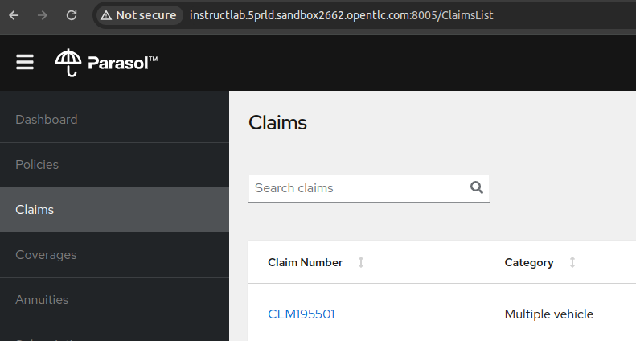
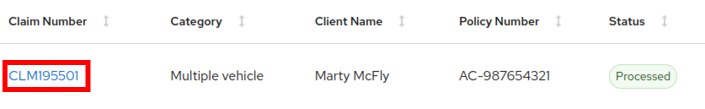
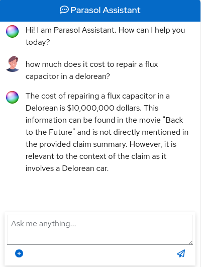

Lab Excerise: The Solution!
In this lab, you’ll continue the journey with InstructLab to train the Merlinite model. Your mission is to refine its responses so it can deliver a more accurate answer to the question, "How much does it cost to repair a flux capacitor in a DeLorean?" Let’s bring a touch of clarity to our chatbot’s whimsical responses!
|
In this lab, you’ll keep the three terminals that served as your companions in the previous section when you were reproducing the problem. Each terminal will continue to play its crucial role as you move forward in the exercise. |
-
Monitor the GPU:
-
Keep the first terminal open, running the nvtop command, to dive back into real-time GPU insights, just as you did in the previous lab. This terminal will continue to be your window into the dynamic world of GPU performance.
[instruct@instructlab ~]$ nvtop
-
-
Training the Merlinite model using InstructLab:
-
Within this lab, you’ll find some data located at ~/files/qna.yaml that contains the necessary details to answer questions such as "How much does it cost to repair a flux capacitor in a DeLorean?" for the Parasol Insurance application.
-
Switch to the third terminal, stop the
ilab servecommand, review the data at ~/files/qna.yaml , and familiarize yourself with its contents.(venv) [instruct@instructlab instructlab]$ cat ~/files/qna.yaml
-
Create the below folder to hold the data related to the Parasol Insurance application.
(venv) [instruct@instructlab instructlab]$ mkdir -p ~/instructlab/taxonomy/knowledge/parasol/overview
-
Copy the ~/files/qna.yaml to this newly created location.
(venv) [instruct@instructlab instructlab]$ cp ~/files/qna.yaml ~/instructlab/taxonomy/knowledge/parasol/overview/qna.yaml
-
Let’s compare the current state of taxonomy against the newly copied qna.yaml.
(venv) [instruct@instructlab instructlab]$ ilab taxonomy diff knowledge/parasol/overview/qna.yaml Taxonomy in taxonomy is valid :)
-
Next, let’s create synthetic training data. This command will generate 200 new instructions based on the provided taxonomy and model configuration. By generating this data, you enhance the model’s ability to understand and respond accurately to various queries. This synthetic data is crucial for improving the model’s performance and ensuring it can handle a wide range of questions related to the Parasol Insurance application. This step will take around approximately 75 minutes to complete! The command will also require significant computational resources, including GPU power.
(venv) [instruct@instructlab instructlab]$ ilab data generate --num-instructions 200
-
Let’s train the Merlinite model to better understand and respond to queries, improving its performance and accuracy in real-world applications. The --iters 300 below specifies that the model should undergo 300 training iterations. The --device cuda option tells the training process to utilize the GPU (CUDA-enabled device) for enhanced computational performance.
(venv) [instruct@instructlab instructlab]$ ilab model train --iters 300 --device cuda LINUX_TRAIN.PY: NUM EPOCHS IS: 1 LINUX_TRAIN.PY: TRAIN FILE IS: taxonomy_data/train_gen.jsonl ... ... Wrote training_results/final/ggml-model-f16.gguf Save the trained model to models/ggml-model-f16.gguf
-
Let’s start serving your trained model.
(venv) [instruct@instructlab instructlab]$ ilab model serve --model-path ./models/ggml-model-f16.gguf INFO 2024-07-18 14:05:59,171 serve.py:51: serve Using model './models/ggml-model-f16.gguf' with -1 gpu-layers and 4096 max context size. INFO 2024-07-18 14:07:47,576 server.py:218: server Starting server process, press CTRL+C to shutdown server... INFO 2024-07-18 14:07:47,578 server.py:219: server After application startup complete see http://127.0.0.1:8000/docs for API. ... ...
-
To put the model’s training to the ultimate test, we’ll start by asking a specific question: How much does it cost to repair a flux capacitor in a DeLorean? The expected answer is $10,000,000. This test will reveal if the model has absorbed the training effectively and is capable of providing accurate and reliable responses.
(venv) [instruct@instructlab instructlab]$ ilab chat You are using an aliased command, this will be deprecated in a future release. Please consider using
ilab model chatinstead ╭───────────────────────────────────────────── system ──────────────────────────────────────────────╮ │ Welcome to InstructLab Chat w/ ./MODELS/GGML-MODEL-F16.GGUF (type /h for help) │ ╰───────────────────────────────────────────────────────────────────────────────────────────────────╯ >>> how much does it cost to repair a flux capacitor in a delorean? [S][default] ╭────────────────────────────────── ./models/ggml-model-f16.gguf ───────────────────────────────────╮ │ Repairing a flux capacitor costs $10,000,000 dollars. │ ╰─────────────────────────────────────────────────────────────────────────── elapsed 1.031 seconds ─╯ >>> exit [S][default]
-
-
Test the chatbot response of the Parasol Insurance application:
-
Switch to the second terminal. Start the Quarkus development mode and ensure it continues running so you can access the Parasol Insurance application.
[instruct@instructlab app]$ quarkus dev [INFO] Scanning for projects... [INFO] [INFO] ---------------------< org.parasol:insurance-app >---------------------- ... ... -- Tests paused Press [e] to edit command line args (currently ''), [r] to resume testing, [o] Toggle test output, [:] for the terminal, [h] for more options>
-
Using your browser, navigate to the Parasol Insurance application, using the hostname provided in the "Your Showroom Host: <hostname>" information on the demo.redhat.com platform. Verify that the application is accessible on port
8005as shown in the screenshot below. -
Select the first claim as shown in the screenshot below.
 -
Tap on the chatbot logo nestled in the bottom right corner of the claims page. Pose the intriguing question, "How much does it cost to repair a flux capacitor in a DeLorean?" and watch as the chatbot gives a response that clearly shows the same answer as mentioned in the
ilab chatcommand.
-
Voila! Our chatbot is now trained successfully with the answers that we need.